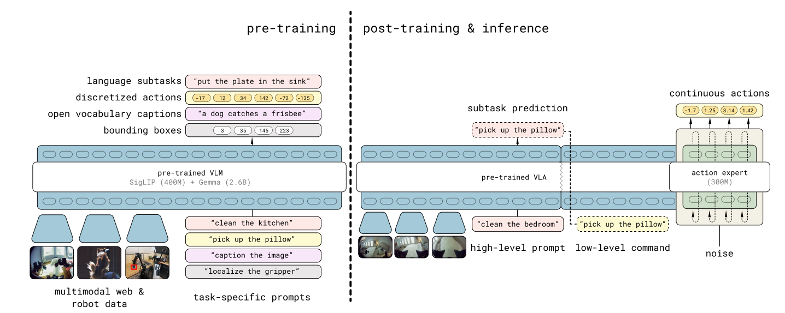
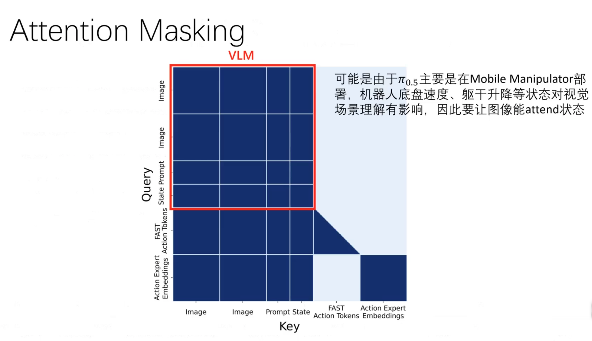

Paper Overview
- 背景：想让机器人在非实验室环境执行实际（操作）任务
- 问题（Gap）：VLA在真实开放环境中还没有泛化能力
"How can we structure a training recipe for a robotic learning system that can enable this kind of flexible generalization?"
- 贡献：对异构任务进行联合训练来赋予迁移/泛化能力
- 方法：用跨本体、跨任务数据进行混合多模态训练
- 实验：在餐厅和卧室场景测试（并首次展现）对长程（15分钟）灵巧操作的泛化能力（指标：任务进度）
Motivations
范式由专才转向通才：
- 专才(Specialist): 单任务数据→单任务策略
- 通才(Generalist): 多场景/任务数据集→泛化到新场景/任务
VLA复刻VLM范式的局限：
理想：Pre-Training(互联网语义知识)→Fine-Tuning(下游操作任务)
局限1：缺少系统的Training Recipe来有效整合异构知识源
局限2：暴力scaling对复杂长程任务不奏效，线性数据增长无法覆盖指数级场景复杂度
Co-Training Recipe：
整合不同构型机器人数据，覆盖不同任务类型，引入非机器人数据（网络图文、语义标注等）
模型架构：区别于传统双模型方案（VLM 规划 + 策略执行），PI 0.5 以单一模型实现CoT式推理
Training recipe
Problem Definition
- Imitation Learning Next Token Prediction
- Imitation Learning Problem:
- Next Token Prediction:
- 输入输出Token化 Auto-Regressive Transformer Backbone
Tokenizer的选择
| 模态 | Tokenizer |
|---|---|
| Image | SigLIP |
| Text | Gemma |
| Robot Proprioceptive State | 精度截断转文本后用 Gemma |
| Bounding Box | 归一化转为标签 <locXXXX> 后用 Gemma |
| Action (Pre-Training) | FAST-Tokenizer |
| Action (Fine-Tuning) | Flow Matching + MLP Projection |
bounding box is the specific location of the object, transferred to <locXXXX>
Pre and post Training
配图待补：原笔记中的预训练 / 后训练示意图文件缺失（
Pasted image 20260721142412.png）。 在pre-training 部分，high-level subtask 是外部提供的数据
Training Loss

- Action Chunk Prediction:
- High-Level Subtask:
- 预训练 ，后训练
- Cross-Entropy Loss of High-Level Text Prediction:
- Flow Matching Loss of Action Expert:
论文原文：
" is the cross entropy loss between the text tokens and predicted logits (including the FAST encoded action tokens)"
所以 是 ground-truth 离散 token 序列（文本 + FAST 动作 token）， 是 VLM backbone 输出的对应 logits。
Pre-Training
- Training Steps: 280k
- Data Format: all tasks are represented in discrete tokens (actions encoded into discrete tokens via FAST tokenizer)
- Mixture Sampling: all data types are trained simultaneously in a mixed manner
| 数据类别 | 缩写 | 内容描述 | 比例/规模 |
|---|---|---|---|
| 移动机械臂数据 (Mobile Manipulators) | MM | 在约100个家庭环境中收集的移动机械臂操作数据 | 约400小时 |
| 非移动多环境数据 (non-mobile Multi-Environments) | ME | 使用更轻便的(单臂/双臂)机械臂在多种家庭环境中收集的数据 | 未明确具体小时数，但属于主要机器人数据来源 |
| 跨构型实验室数据 (lab Cross-Embodiment) | CE | 包含OXE开源数据集（Bridge v2、DROID等）的实验室条件数据 | 9.1%的预训练混合数据（参考π0的OXE Magic Soup比例） |
| 高层子任务预测数据 (High-Level subtask prediction) | HL | 为多阶段任务手动标注语义子任务描述和边界框 | 来自MM、ME、CE中含多子任务的数据 |
| 多模态网络数据 (multi-modal Web Data) | WD | 图像描述、视觉问答（VQA）、目标检测等网络数据 | 未明确具体比例，但用于提供语义和视觉能力 |
Post-Training (Fine-Tuning)
- Training Steps: 80k
- CE removed
- VI added
- Action Expert using Flow Matching introduced
| 数据类别 | 缩写 | 内容描述 | 比例/规模 |
|---|---|---|---|
| 移动机械臂数据 (Mobile Manipulators) | MM | 在约100个家庭环境中收集的移动机械臂操作数据 | 过滤为成功且长度低于阈值的片段 |
| 非移动多环境数据 (non-mobile Multi-Environments) | ME | 使用更轻便的(单臂/双臂)机械臂在多种家庭环境中收集的数据 | 过滤为成功且长度低于阈值的片段 |
| 口头指令 (Verbal Instructions) | VI | 由专家用户在机器人执行任务时口述当前应执行的子任务 | 未披露 |
| 高层子任务预测数据 (High-Level subtask prediction) | HL | 为多阶段任务手动标注语义子任务描述和边界框 | 仅保留ME中含多子任务的数据 |
| 多模态网络数据 (multi-modal Web Data) | WD | 图像描述、视觉问答（VQA）、目标检测等网络数据 | 维持模型的语义和视觉能力 |
Data Flow

π₀.₅ 注意力掩码 · 查看原图

「Sonnet Generated」 π 0.5 相对于 π₀ 的改进
1. 离散+连续动作双表示（FAST + Flow Matching 混合训练）
π₀ 整个训练过程始终使用 flow matching（连续动作，Action Expert）。π₀.5 引入了 FAST tokenizer（一种基于 DCT 压缩的动作离散化方案），将训练分成两阶段：
预训练阶段（α = 0）：动作用 FAST 离散 token 表示，以标准自回归 next-token prediction 训练，速度快、规模易扩展。
后训练阶段：同时优化两个目标——
其中 ，两个 action head（FAST token 和 flow matching Action Expert）共存但通过 attention mask 隔离，避免信息泄漏。
实际收益：预训练时用 FAST token 比纯 diffusion 训练计算效率更高；推理时用 flow matching（10步去噪）获得高精度连续动作。
2. 内嵌的层级推理（高层 + 低层统一模型）
π₀ 中高层规划（VLM）和低层控制（π₀）是两个独立模型，靠语言接口串联。
π₀.5 将两者合并为单一模型，联合建模：
推理时的执行顺序：
- 模型先自回归输出 （当前子任务，例如 "pick up the plate"）
- 再以 为条件，flow matching 输出低层动作块
高层推理以 较低频率运行（不是每步都重新预测子任务），低层 action chunk 以 50Hz 执行。这类似 chain-of-thought，但专门为机器人控制中的时间异步性设计。
消融实验表明：显式高层推理 > 隐式（仅训练含子任务标注数据但推理时不输出）> 完全没有高层数据，且 π₀.5 甚至超过了人类作为 oracle 高层策略的基线。
3. 异构数据协训练（Co-training）
π₀ 的训练数据基本都是机器人动作数据（imitation learning）。π₀.5 在数据层面做了根本性扩展，将以下数据源统一进同一个 VLA 序列建模框架：
| 数据类型 | 来源 | 作用 |
|---|---|---|
| MM：移动机械手 | ~400h，~100个真实家庭 | 最直接的目标域数据 |
| ME：多环境非移动臂 | 轻便单/双臂，更易采集于多家庭 | 跨本体泛化 |
| CE：实验室跨本体数据 | 含 OXE，多种机器人类型 | 多任务技能迁移 |
| HL：高层子任务标注 | 对 MM/ME/CE 数据手工标注子任务 | 教模型场景语义推理 |
| WD：多模态网络数据 | 图像字幕（COCO/CapsFusion）、VQA、目标检测（bounding box） | 增强 OOD 物体识别和语言理解 |
| VI：语言示范（Verbal Instruction） | 人类用语言"遥操作"已训练低层策略来演示子任务序列 | 提升高层推理策略质量 |
97.6% 的预训练数据不来自移动机械手家务任务，但模型最终能在全新家庭中泛化——这验证了跨域迁移的有效性。消融结果显示去掉 ME 或 CE 都会显著降低性能；去掉 WD 对 OOD 物体语言跟随损害最大。
4. 时间步注入方式的细节改动（Action Expert 架构微调）
π₀ 将 flow matching 时间步 与带噪动作 拼接后一起输入 Action Expert。
π₀.5 改为独立 MLP + adaptive RMSNorm 的方式注入 ：
然后对 Action Expert 每一层的激活施加 adaptive RMSNorm（类似 DiT 中的 AdaLN），让时间步信息以"调制归一化"方式渗透整个 Action Expert，而非只影响输入层。
5. 注意力掩码重新设计
π₀ 的 Action Expert token 可以全局双向互相 attend。
π₀.5 更精细：
- 图像/语言/本体感知构成 prefix，全局双向 attend
- FAST 动作 token 自回归地 attend prefix + 之前的 FAST token
- Action Expert token attend prefix + 彼此，但不 attend FAST token（防止两种动作表示之间信息泄漏）
- VLM 的 embedding 不 attend Action Expert（信息单向流动：VLM → Action Expert）
总结对比
| 维度 | π₀ | π₀.5 |
|---|---|---|
| 动作表示 | 全程 flow matching | 预训练用 FAST 离散 token，后训练加 flow matching |
| 高层策略 | 外挂独立 VLM | 统一模型内嵌，联合推理 |
| 数据来源 | 机器人演示 + OXE | 机器人演示 + 多环境非移动臂 + 网络数据 + 子任务标注 + 语言示范 |
| 注入 | 拼接输入 | 独立 MLP + adaptive RMSNorm 调制每层 |
| 注意力 | VLM 因果 + Action Expert 双向 | 增加 FAST/Expert 隔离掩码，单向信息流 |
| 评估场景 | 实验室 + 已见任务 | 全新家庭，完全未见场景 |